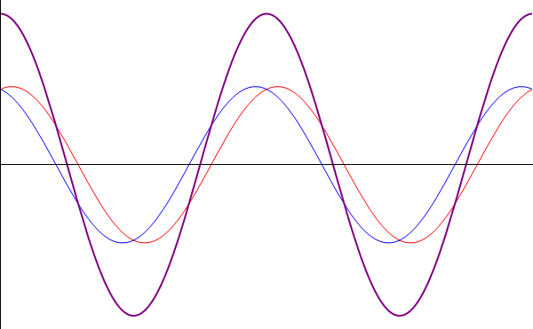

Señales Electricas
¿QUÉ ES UNA SEÑAL ELECTRICA ?
𝚄𝚗𝚊 𝚜𝚎ñ𝚊𝚕 𝚎𝚕é𝚌𝚝𝚛𝚒𝚌𝚊 𝚎𝚜 𝚞𝚗 𝚝𝚒𝚙𝚘 𝚍𝚎 𝚜𝚎ñ𝚊𝚕 𝚐𝚎𝚗𝚎𝚛𝚊𝚍𝚊 𝚙𝚘𝚛 𝚊𝚕𝚐ú𝚗 𝚏𝚎𝚗ó𝚖𝚎𝚗𝚘 𝚎𝚕𝚎𝚌𝚝𝚛𝚘𝚖𝚊𝚐𝚗é𝚝𝚒𝚌𝚘.
𝙻𝚊 𝚜𝚎ñ𝚊𝚕 𝚙𝚞𝚎𝚍𝚎 𝚐𝚎𝚗𝚎𝚛𝚊𝚛𝚜𝚎 𝚊𝚛𝚝𝚒𝚏𝚒𝚌𝚒𝚊𝚕𝚖𝚎𝚗𝚝𝚎 𝚙𝚘𝚛 𝚞𝚗 𝚌𝚒𝚛𝚌𝚞𝚒𝚝𝚘 𝚎𝚕𝚎𝚌𝚝𝚛ó𝚗𝚒𝚌𝚘 (𝚘𝚜𝚌𝚒𝚕𝚊𝚍𝚘𝚛). 𝚂𝚒𝚗 𝚎𝚖𝚋𝚊𝚛𝚐𝚘, 𝚎𝚗 𝚕𝚊 𝚖𝚊𝚢𝚘𝚛í𝚊 𝚍𝚎 𝚕𝚊𝚜 𝚊𝚙𝚕𝚒𝚌𝚊𝚌𝚒𝚘𝚗𝚎𝚜 𝚙𝚛á𝚌𝚝𝚒𝚌𝚊𝚜, 𝚕𝚊 𝚜𝚎ñ𝚊𝚕 𝚎𝚕é𝚌𝚝𝚛𝚒𝚌𝚊 𝚛𝚎𝚙𝚛𝚎𝚜𝚎𝚗𝚝𝚊 𝚕𝚊 𝚟𝚊𝚛𝚒𝚊𝚌𝚒ó𝚗 𝚍𝚎 𝚘𝚝𝚛𝚊 𝚖𝚊𝚐𝚗𝚒𝚝𝚞𝚍 𝚏í𝚜𝚒𝚌𝚊 𝚎𝚗 𝚎𝚕 𝚝𝚛𝚊𝚗𝚜𝚌𝚞𝚛𝚛𝚒𝚛 𝚍𝚎𝚕 𝚝𝚒𝚎𝚖𝚙𝚘, 𝚌𝚘𝚗𝚟𝚎𝚛𝚝𝚒𝚍𝚊 𝚎𝚗 𝚎𝚕𝚎𝚌𝚝𝚛𝚒𝚌𝚒𝚍𝚊𝚍 𝚙𝚘𝚛 𝚞𝚗 𝚝𝚛𝚊𝚗𝚜𝚍𝚞𝚌𝚝𝚘𝚛. 𝚂𝚎 𝚌𝚘𝚗𝚜𝚒𝚍𝚎𝚛𝚊 𝚌𝚘𝚖𝚘 𝚜𝚎ñ𝚊𝚕 𝚕𝚊 𝚒𝚗𝚏𝚘𝚛𝚖𝚊𝚌𝚒ó𝚗 ú𝚝𝚒𝚕 𝚙𝚊𝚛𝚊 𝚎𝚕 𝚌𝚒𝚛𝚌𝚞𝚒𝚝𝚘. 𝙲𝚞𝚊𝚕𝚚𝚞𝚒𝚎𝚛 𝚒𝚗𝚏𝚘𝚛𝚖𝚊𝚌𝚒ó𝚗 𝚒𝚗𝚍𝚎𝚜𝚎𝚊𝚍𝚊, 𝚒𝚗ú𝚝𝚒𝚕 𝚘 𝚍𝚊ñ𝚒𝚗𝚊, 𝚒𝚗𝚝𝚛𝚘𝚍𝚞𝚌𝚒𝚍𝚊 𝚒𝚗𝚟𝚘𝚕𝚞𝚗𝚝𝚊𝚛𝚒𝚊𝚖𝚎𝚗𝚝𝚎 𝚎𝚗 𝚎𝚕 𝚜𝚒𝚜𝚝𝚎𝚖𝚊, 𝚎𝚜 𝚌𝚘𝚗𝚜𝚒𝚍𝚎𝚛𝚊𝚍𝚊 𝚛𝚞𝚒𝚍𝚘.

Tipos de Señales Electricas
- .ａｎａｌóｇｉｃａｓ
- .ｄｉｇｉｔａｌｅｓ
𝙻𝚊 𝚜𝚎ñ𝚊𝚕 𝚊𝚗𝚊𝚕ó𝚐𝚒𝚌𝚊 𝚎𝚜 𝚊𝚚𝚞𝚎𝚕𝚕𝚊 𝚚𝚞𝚎 𝚙𝚛𝚎𝚜𝚎𝚗𝚝𝚊 𝚞𝚗𝚊 𝚟𝚊𝚛𝚒𝚊𝚌𝚒ó𝚗 𝚌𝚘𝚗𝚝𝚒𝚗𝚞𝚊 𝚌𝚘𝚗 𝚎𝚕 𝚝𝚒𝚎𝚖𝚙𝚘, 𝚎𝚜 𝚍𝚎𝚌𝚒𝚛, 𝚚𝚞𝚎 𝚊 𝚞𝚗𝚊 𝚟𝚊𝚛𝚒𝚊𝚌𝚒ó𝚗 𝚜𝚞𝚏𝚒𝚌𝚒𝚎𝚗𝚝𝚎𝚖𝚎𝚗𝚝𝚎 𝚜𝚒𝚐𝚗𝚒𝚏𝚒𝚌𝚊𝚝𝚒𝚟𝚊 𝚍𝚎𝚕 𝚝𝚒𝚎𝚖𝚙𝚘 𝚕𝚎 𝚌𝚘𝚛𝚛𝚎𝚜𝚙𝚘𝚗𝚍𝚎𝚛á 𝚞𝚗𝚊 𝚟𝚊𝚛𝚒𝚊𝚌𝚒ó𝚗 𝚒𝚐𝚞𝚊𝚕𝚖𝚎𝚗𝚝𝚎 𝚜𝚒𝚐𝚗𝚒𝚏𝚒𝚌𝚊𝚝𝚒𝚟𝚊 𝚍𝚎𝚕 𝚟𝚊𝚕𝚘𝚛 𝚍𝚎 𝚕𝚊 𝚜𝚎ñ𝚊𝚕 (𝚕𝚊 𝚜𝚎ñ𝚊𝚕 𝚎𝚜 𝚌𝚘𝚗𝚝𝚒𝚗𝚞𝚊). 𝚃𝚘𝚍𝚊 𝚜𝚎ñ𝚊𝚕 𝚟𝚊𝚛𝚒𝚊𝚋𝚕𝚎 𝚎𝚗 𝚎𝚕 𝚝𝚒𝚎𝚖𝚙𝚘, 𝚙𝚘𝚛 𝚌𝚘𝚖𝚙𝚕𝚒𝚌𝚊𝚍𝚊 𝚚𝚞𝚎 é𝚜𝚝𝚊 𝚜𝚎𝚊, 𝚜𝚎 𝚛𝚎𝚙𝚛𝚎𝚜𝚎𝚗𝚝𝚊 𝚎𝚗 𝚎𝚕 á𝚖𝚋𝚒𝚝𝚘 𝚍𝚎 𝚜𝚞𝚜 𝚟𝚊𝚕𝚘𝚛𝚎𝚜 (𝚎𝚜𝚙𝚎𝚌𝚝𝚛𝚘) 𝚍𝚎 𝚏𝚛𝚎𝚌𝚞𝚎𝚗𝚌𝚒𝚊. 𝙳𝚎 𝚎𝚜𝚝𝚎 𝚖𝚘𝚍𝚘, 𝚌𝚞𝚊𝚕𝚚𝚞𝚒𝚎𝚛 𝚜𝚎ñ𝚊𝚕 𝚎𝚜 𝚜𝚞𝚜𝚌𝚎𝚙𝚝𝚒𝚋𝚕𝚎 𝚍𝚎 𝚜𝚎𝚛 𝚛𝚎𝚙𝚛𝚎𝚜𝚎𝚗𝚝𝚊𝚍𝚊 𝚍𝚎𝚜𝚌𝚘𝚖𝚙𝚞𝚎𝚜𝚝𝚊 𝚎𝚗 𝚜𝚞 𝚏𝚛𝚎𝚌𝚞𝚎𝚗𝚌𝚒𝚊 𝚏𝚞𝚗𝚍𝚊𝚖𝚎𝚗𝚝𝚊𝚕 𝚢 𝚜𝚞𝚜 𝚊𝚛𝚖ó𝚗𝚒𝚌𝚘𝚜. 𝙴𝚕 𝚙𝚛𝚘𝚌𝚎𝚜𝚘 𝚖𝚊𝚝𝚎𝚖á𝚝𝚒𝚌𝚘 𝚚𝚞𝚎 𝚙𝚎𝚛𝚖𝚒𝚝𝚎 𝚎𝚜𝚝𝚊 𝚍𝚎𝚜𝚌𝚘𝚖𝚙𝚘𝚜𝚒𝚌𝚒ó𝚗 𝚜𝚎 𝚍𝚎𝚗𝚘𝚖𝚒𝚗𝚊 𝚊𝚗á𝚕𝚒𝚜𝚒𝚜 𝚍𝚎 𝙵𝚘𝚞𝚛𝚒𝚎𝚛.
𝚄𝚗𝚊 𝚜𝚎ñ𝚊𝚕 𝚍𝚒𝚐𝚒𝚝𝚊𝚕 𝚎𝚜 𝚊𝚚𝚞𝚎𝚕𝚕𝚊 𝚚𝚞𝚎 𝚙𝚛𝚎𝚜𝚎𝚗𝚝𝚊 𝚞𝚗𝚊 𝚟𝚊𝚛𝚒𝚊𝚌𝚒ó𝚗 𝚍𝚒𝚜𝚌𝚘𝚗𝚝𝚒𝚗𝚞𝚊 𝚌𝚘𝚗 𝚎𝚕 𝚝𝚒𝚎𝚖𝚙𝚘 𝚢 𝚚𝚞𝚎 𝚜ó𝚕𝚘 𝚙𝚞𝚎𝚍𝚎 𝚝𝚘𝚖𝚊𝚛 𝚌𝚒𝚎𝚛𝚝𝚘𝚜 𝚟𝚊𝚕𝚘𝚛𝚎𝚜 𝚍𝚒𝚜𝚌𝚛𝚎𝚝𝚘𝚜. 𝚂𝚞 𝚏𝚘𝚛𝚖𝚊 𝚌𝚊𝚛𝚊𝚌𝚝𝚎𝚛í𝚜𝚝𝚒𝚌𝚊 𝚎𝚜 𝚊𝚖𝚙𝚕𝚒𝚊𝚖𝚎𝚗𝚝𝚎 𝚌𝚘𝚗𝚘𝚌𝚒𝚍𝚊: 𝚕𝚊 𝚜𝚎ñ𝚊𝚕 𝚋á𝚜𝚒𝚌𝚊 𝚎𝚜 𝚞𝚗𝚊 𝚘𝚗𝚍𝚊 𝚌𝚞𝚊𝚍𝚛𝚊𝚍𝚊 (𝚙𝚞𝚕𝚜𝚘𝚜) 𝚢 𝚕𝚊𝚜 𝚛𝚎𝚙𝚛𝚎𝚜𝚎𝚗𝚝𝚊𝚌𝚒𝚘𝚗𝚎𝚜 𝚜𝚎 𝚛𝚎𝚊𝚕𝚒𝚣𝚊𝚗 𝚎𝚗 𝚎𝚕 𝚍𝚘𝚖𝚒𝚗𝚒𝚘 𝚍𝚎𝚕 𝚝𝚒𝚎𝚖𝚙𝚘.

En un inicio Nikola Tesla llego a trabajar para T. Alva Edison, existe una anécdota que donde cuenta que Edison, le prometió a Tesla pagarle 500 dólares si lograba mejorar su generador eléctrico, al cabo de unos meses Tesla cumplió su objetivo, pero Edison no le pago el dinero y simplemente le contesto que había sido una broma, y que él (Tesla) no comprendía el humor norteamericano.